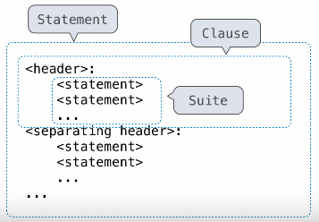

Control
Table of Contents
1. Statements
A statement is executed by the interpreter to perform an action.
We can also define compound statements, which are statements that span multiple lines. Generally, there is some header, followed by an indented block of statements known as the suite. The header with its suite is known as a clause. Compound statements can have multiple clauses.
In a compound statement, the first header determines the statement's type. For each clause, the header of that clause controls the suite that follows. An example of a compound statement are def statements.

2. Conditional Statements
A conditional statement is a compound statement that controls execution flow. The following example is a conditional statement that uses if, elif, and else:
def absolute_value(x): """Return the absolute value of x.""" if x < 0: return -x elif x == 0: return 0 else: return x
This conditional statement consists of one statement, three clauses, three headers, and three suites. A conditional statement:
- Always starts with an
ifclause. - Followed by zero or more
elifclauses. - Ends with zero or one
elseclause.
2.1. Procedure for Conditional Statements
Each clause is considered in order. For each clause:
- Evaluate the header's expression.
- If it is a
Truevalue, execute the suite and skip the remaining clauses.
Notice that a conditional statement only ever executes one clause.
2.2. Boolean Contexts
A boolean context is a context in which we only care if the expression evaluates to True or False. Examples of False values include False, 0, '', None, and others. Anything other than a False value is a True value.
3. Iteration
3.1. while Statements
While statements contain statements that are repeated as long as some condition is true. The following is a while statement:
i, total = 0, 0 while i < 3: i = i + 1 total = total + i
This loop calculates the total sum of the numbers from 1 through 3.
The Fibonacci sequence
We can write a function using a while loop to find the nth Fibonacci number:
def fib(n): """Compute the nth Fibonacci number, for N >= 1.""" pred, curr = 0, 1 k = 1 while k < n: pred, curr = curr, pred + curr k = k + 1 return curr
3.1.1. Procedure for while Statements
- Evaluate the header's expression.
- If it is a true value, execute the whole suite, then return to step 1.
Note that the while condition must eventually become a false value for the statement to end, otherwise you have an infinite loop.
4. Control Expressions
4.1. Logical Operators
To evaluate the expression <left> and <right>:
- Evaluate the subexpression
<left>. - If the result is a false value
v, then the expression evaluates tov. - Otherwise, the expression evaluates to the value of the subexpression
<right>.
To evaluate the expression <left> or <right>:
- Evaluate the subexpression
<left>. - If the result is a true value
v, then the expression evaluates tov. - Otherwise, the expression evaluates to the value of the subexpression
<right>.
Notice that for these logical operators, once <left> is evaluated to either false for and or true for or, the interpreter does not evaluate <right>. This is important because sometimes, we want to use <left> to check for a condition that would otherwise make evaluating <right> undefined behavior.